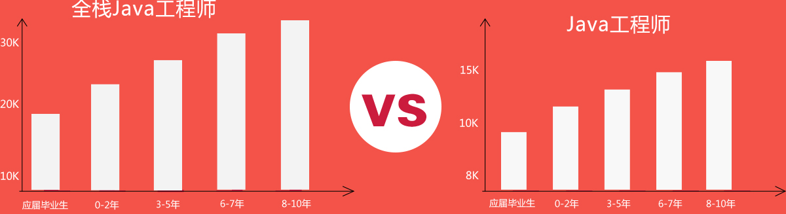
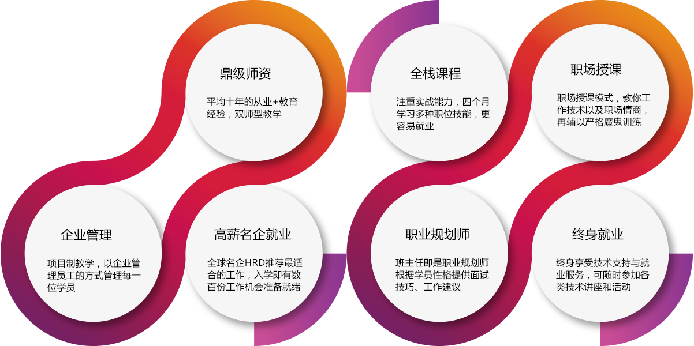
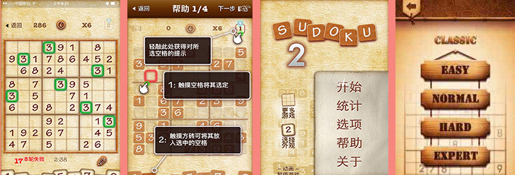
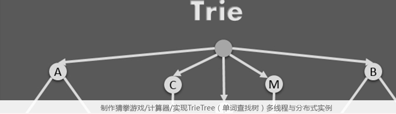
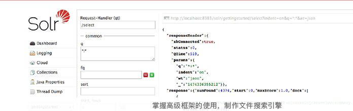
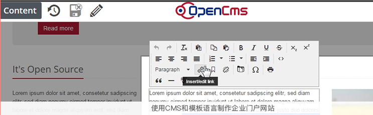
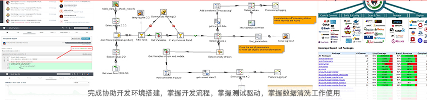
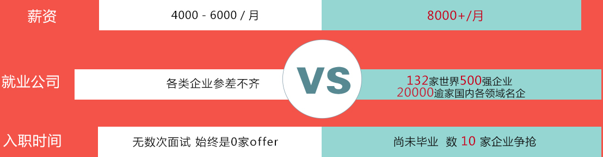

未来是全栈H5+Java的世界
选择一根筋你是正确的
-
随着技术的发展，如今的技
术门槛下降得越来越快，原
本需要一个团队做出来的
Web应用，现在只需要一两
个人就可以了。 -
大公司学做人，小公司学
做事。创业潮的涌现，需
要越来越多精通各个岗位
的人才加入，全栈工程师
是最佳选择。 -
2016年是直播元年，2017
年直播进一步升温，将会成
为各个行业的重要宣传手段
直播平台需要全栈工程师开
发、运营。 -
2017年1月9日，微信小程序
发布，1月12日，支付宝宣布
研发小程序，小程序需要同
时精通前端、后端的人才，
全栈工程师站在风口。
全栈可以学微信小程序么
Java应用领域无处不在
应用领域广泛 就业口径宽广
学好全栈H5+Java，即可胜任绝大多数公司的开发岗位，无论是前端、后端、移动端还是全栈，全部信手拈来！
-
Java研发工程师
一套课程，点亮全栈工程师全部
技能树，无论是前端、后端移动
端皆可胜任， 毕业第一年月薪可
达15k+！ -
Web前端工程师
目前我国前端开发职位的 人才缺口
达到60万人 ，技术发展飞快，现代
化的前端要求极高且必须具备全栈
开发的能力。 -
Java全栈工程师
学成后即可轻松开发新浪、人人网
之类的社区网站，建立淘宝、京东
之类的商城系统, 月薪轻松突破
10k+！ -
爬虫研发工程师
2017年是移动端的天下微信小程
序、支付宝小程序将会席卷未来
移动端开发重新成为 市场尖端技
术。 -
搜索引擎工程师
搜索引擎人才缺口大，薪金待遇
较高，工作经验和企业性质的不
同都会影响薪资水平。公司待遇
高，高级的搜索引擎工程师的 年
薪可达60万。 -
查看
课程大纲
2016年全栈工程师平均薪资在17k以上，集中在
，甚至可高达
!

如何获取高薪
7大模块 练就全栈开发全能人才
不符合就业市场的课程都是耍流氓

教学经验+从业经验 双重保障
双师型教学保障高薪就业

12年互联网从业经验
曾任格兰仕集团系统架构师、北京学习鸟信息科技合伙人、晶传美科技技术
总监、国家信息化测评中心研发总监
专注分布式、大数据、人工智能方向，关注研发团队生产效率提升、项目自
动化构建和产品持续交付
想知道企业急需什么样的Java人才吗？你想成为企业急需的高薪Java人才吗？
我能告诉你该怎么做！
曾任格兰仕集团系统架构师、北京学习鸟信息科技合伙人、晶传美科技技术
总监、国家信息化测评中心研发总监
专注分布式、大数据、人工智能方向，关注研发团队生产效率提升、项目自
动化构建和产品持续交付
想知道企业急需什么样的Java人才吗？你想成为企业急需的高薪Java人才吗？
我能告诉你该怎么做！
与时俱进的课程 能塑造高薪传奇紧跟企业需求，前沿技术一网打尽
- 前端开发环境搭建
- 网页基本机构
- SEO 基础
- CSS 选择器
- HTML5 语义化标签
- Canvas
- 互联网原理
- HTML 基础
- CSS 引入方式
- 盒模型与布局
- HTML5 本地存储
第一阶段 HTML/CSS (10 天)
学习目的
学习成果
- ECMAScript 语法
- JS 特效
- AJAX/jQuery
- JSONP 跨域
- DOM/BOM
- 面向对象与闭包
- XML/JSON
第二阶段 JavaScript （17 天）
学习目的
学习成果

- 移动端适配
- 伪类与 Hack 技术
- 实例：大型静态站点、响应式站点
- 响应式布局与浏览器兼容
- angular/vuejs/react
第三阶段 交互手绘
学习目的
学习成果
- Java 语法基础
- 数组、集合与散列
- 多线程、分步式布
- 面向对象
- IO流
- Socket 初级网络编程
第四阶段 GUI主题图标设计
学习目的
学习成果

- Ant、Maven、Gradle 安装与使用
- Github 的注册与使用
- Unit 单元测试与 TTD 测试驱动
- RMI 分布式远程方法调用
- NIO 通讯及 Netty 框架使用
- Jetty 快速搭建 HTTP 服务器
- MySQL/Oracle
- ETL 数据清洗
- Git/SVN 安装与使用
- Jenkins 持续集成
- Socket 套接字
- SMTP 简单邮件传输协议
- HTTP 协议与 Web（万维网）
- Apache 与 Nginx
- SQL/JDBC/连接池
第五阶段 网络与数据库（12 天）
学习目的
学习成果

- Servlet
- Cookie 与 Session
- 过滤器和监听器
- Apache Velocity 与 Freemarker
- JSP 技术规范
- Struts2
- 模板语言
- 使用 CMS 与模板言搭建企业官网
第六阶段 Web 编程框架（18 天）
学习目的
学习成果

- Spring4 与 SpringMVC
- Shiro
- Redis/ActiveMQ
- Solr
- SOA DUBBO
- MyBatis
- MongoDB
- Lucene
- Zookeeper
第七阶段 高级架构（10 天）
学习目的
学习成果

不必羡慕别人 只要努力就能超越他们即刻行动， 开启高薪晋级之路
 普通求职者
普通求职者- 一根筋毕业学员
